Przyroda ziemii Gorlickiej jest bardzo piękna. Jest bardzo różnorodna - występuje wiele lasów, łąk i mokradeł. Mamy też rzeki, jeziora i nawet sztuczny zalew.
Zalew Klimkówka
Jezioro Klimkowskie, znane lepiej jako Klimkówka, to sztuczny zalew utworzony na rzecze Ropie w 1994 roku. Cały proces budowy zajął 24 lata. Oprócz bycia świetnym miejscem na wypoczynek, Klimkówka jest także źródłem wody pitnej i przemysłowej dla Jasła i Gorlic.
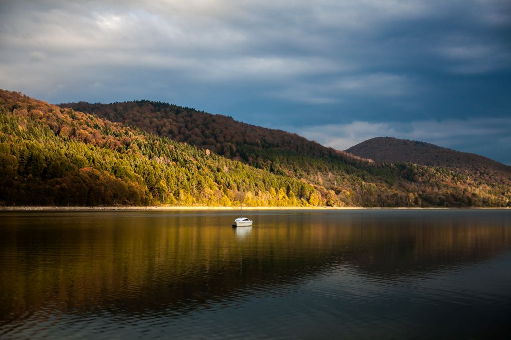 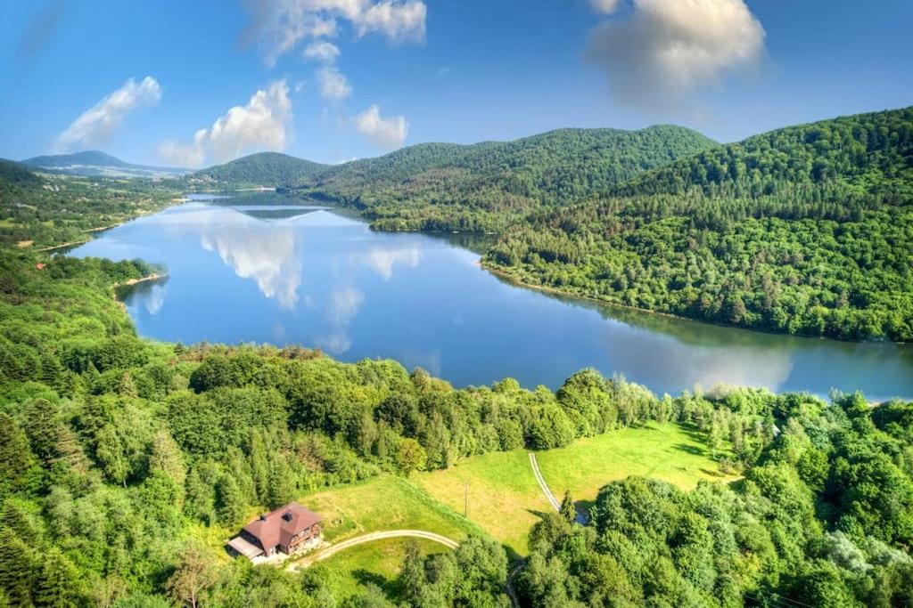Park miejski w Gorlicach
Park miejski im. Wojciecha Biechońskiego położony jest w widłach rzek Ropa i Sękówka. Powstał on w roku 1900, gdy miasto Gorlice wykupiło od wsi Sokół tereny, które przeznaczyło na założenie parku. Obecnie Sokół jest dzielnicą Gorlic, w niej też znajduje się Park. Do Parku prowadzą trzy mosty - jeden drogowy i dwa piesze. Jeden z nich jest okazałym mostem wiszącym.
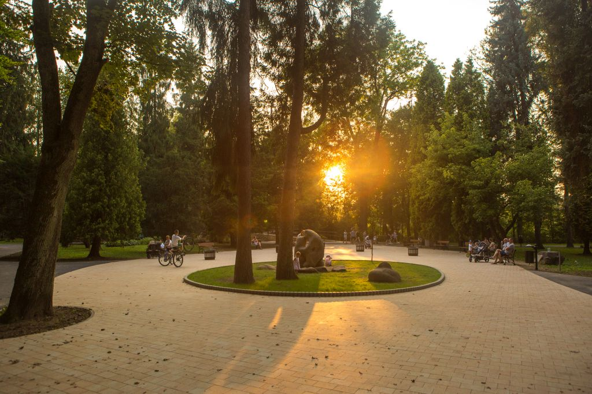 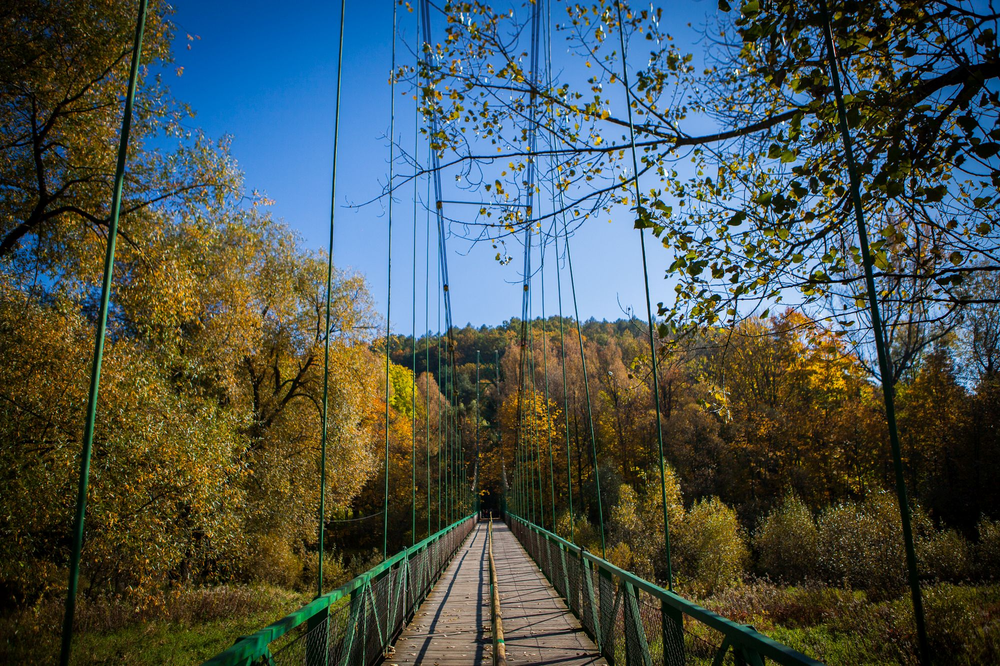Magurski Park Narodowy
Magurski Park Narodowy powstał 1 stycznia 1995 roku. Obejmuje on tereny na pograniczu województw Małopolskiego i Podkarpackiego, ma powierzchnię 194,39 km kwadratowych. W parku tym występuje ponad 800 gatunków roślin i ok. 200 gatunków zwierząt. Rocznie odwiedza go ok. 40 tys. ludzi.
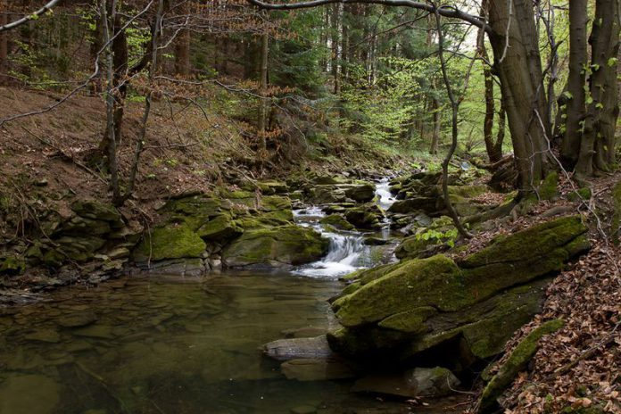 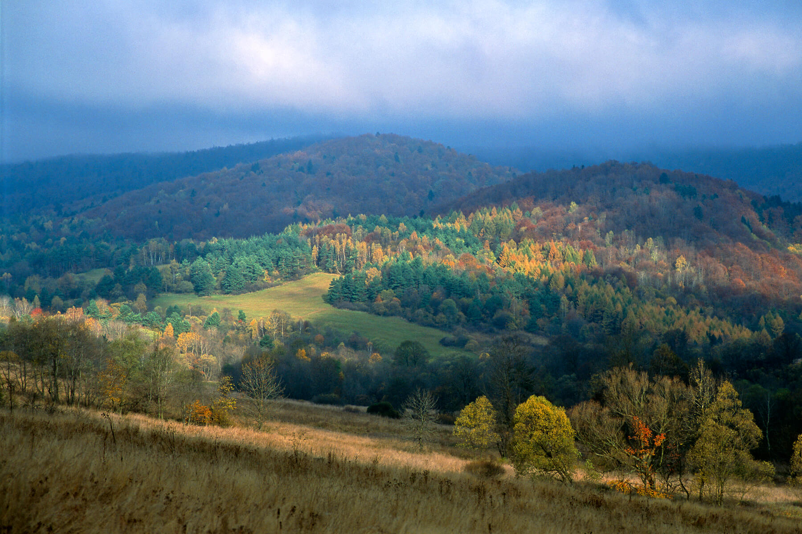Większość Gorlic została zniszczona podczas pierwszej wojny światowej. Z tego powodu w Gorlicach nie zbyt wielu zabytków. Jednak pozostało kilka budynków, na które warto zwrócić uwagę.
Bazylika mniejsza pod wezwaniem Najświętszej Maryi Panny w Gorlicach.
Bazylika mniejsza pod wezwaniem Najświętszej Maryi Panny w Gorlicach była budowana w latach 1885 - 1892. Została mocno zniszczona podczas biwty pod Gorlicami w 1915 roku. Odbudowano ją w latach 1921 - 1932. W latach 2000 - 2003 przeszła remont. 23 maja 2009 roku papież Benedykt XVI mianował kościół Bazyliką mniejszą. W jednej z bocznych naw znajduje się figura Pana Jezusa w Więzieniu.
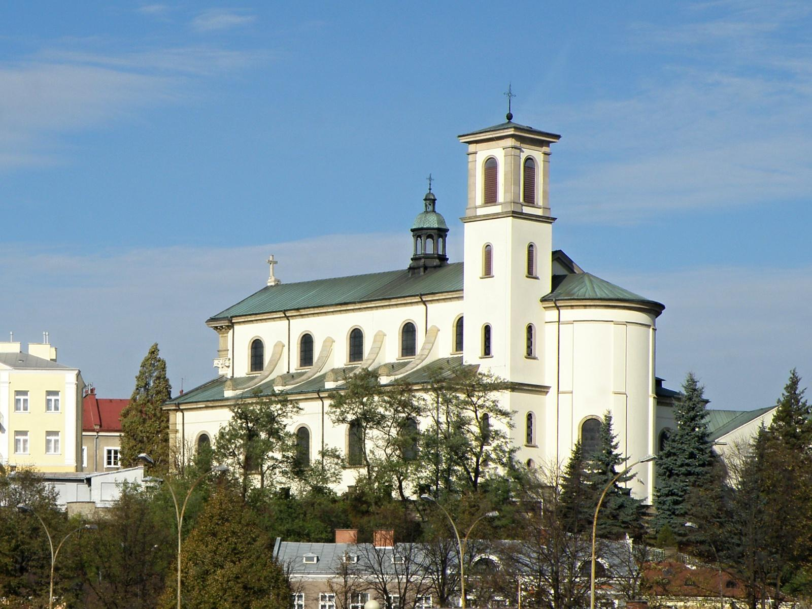 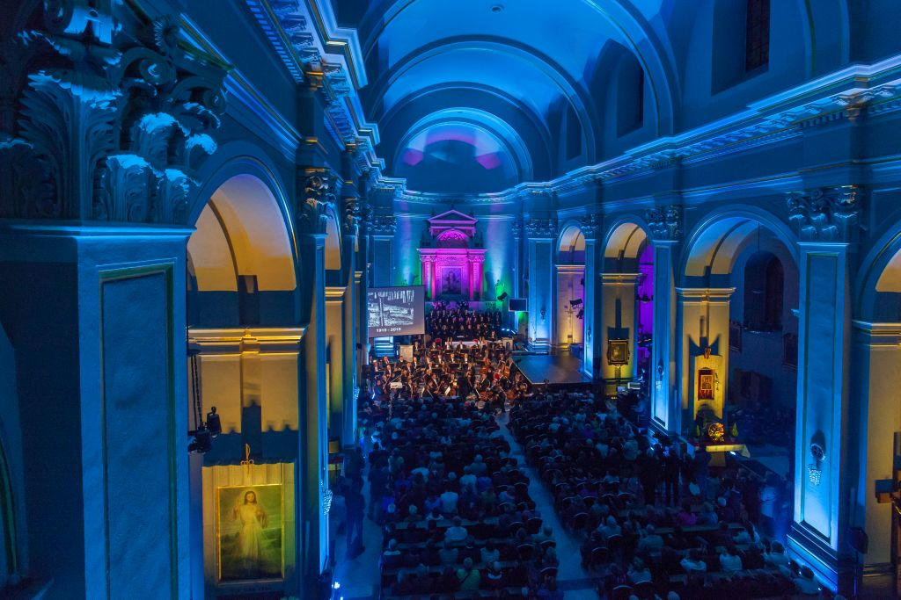Kościół pod wezwaniem Świętych Jakuba i Filipa w Sękowej.
Kościół pod wezwaniem Świętych Jakuba i Filipa w Sękowej to drewniany kościół, zbudowany na początku XVI wieku (ok. 1520 rok). Został on wpisany na listę światowego dziedzictwa UNESCO Jest on zbudowany w stylu gotyckim sakralnego budownictwa drewnianego. Do 1914 roku był uważany za najpiękniejszy w całej Małopolsce.
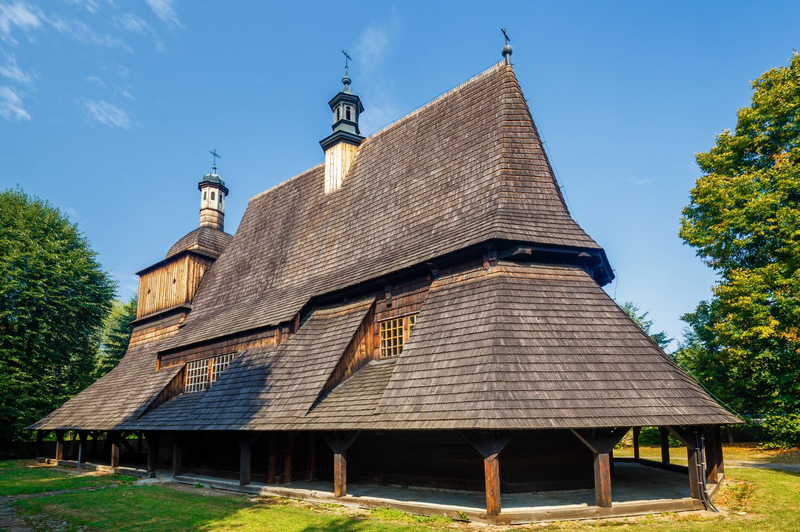 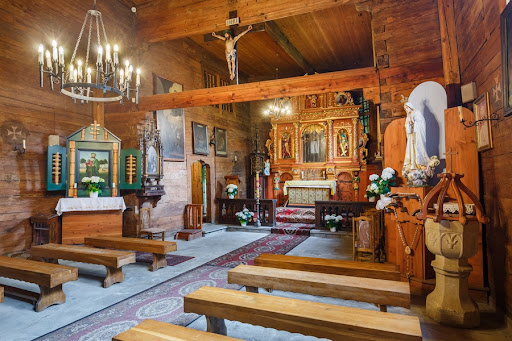Ratusz Gorlicki.
Gorlicki ratusz został oryginalnie zbudowany w roku 1790. W latach 1948 - 1950 został on rozbudowany, gdzyż nie był wystarczająco okazały. W XIX wieku w ratuszu mieściła się apteka, którą prowadził Ignacy Łukasiewicz. W roku 2023 zakończony został remont ratusza.
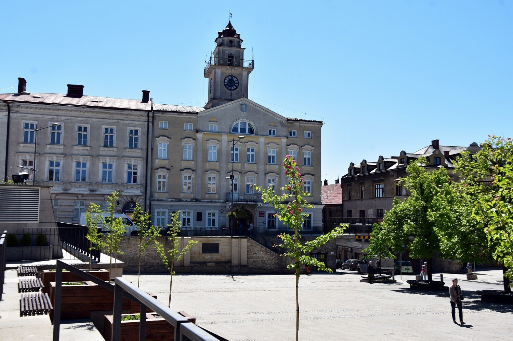 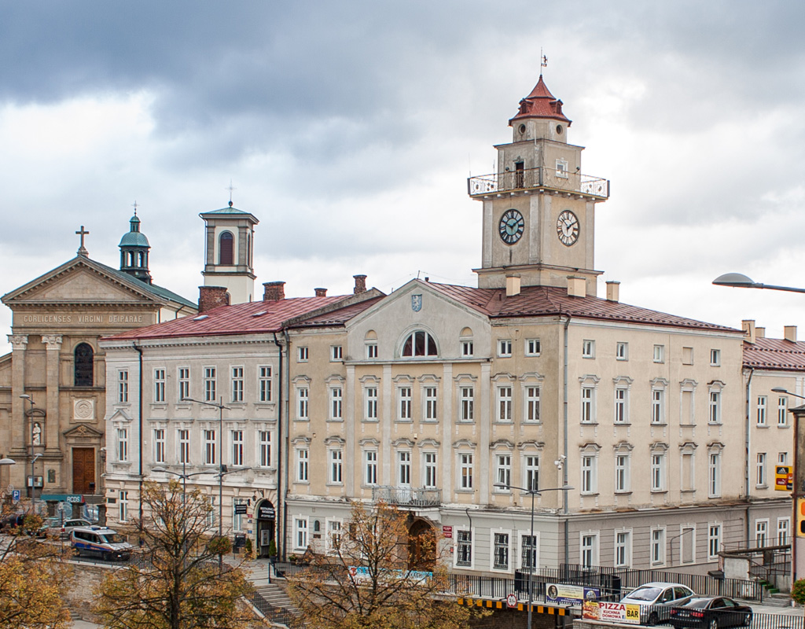